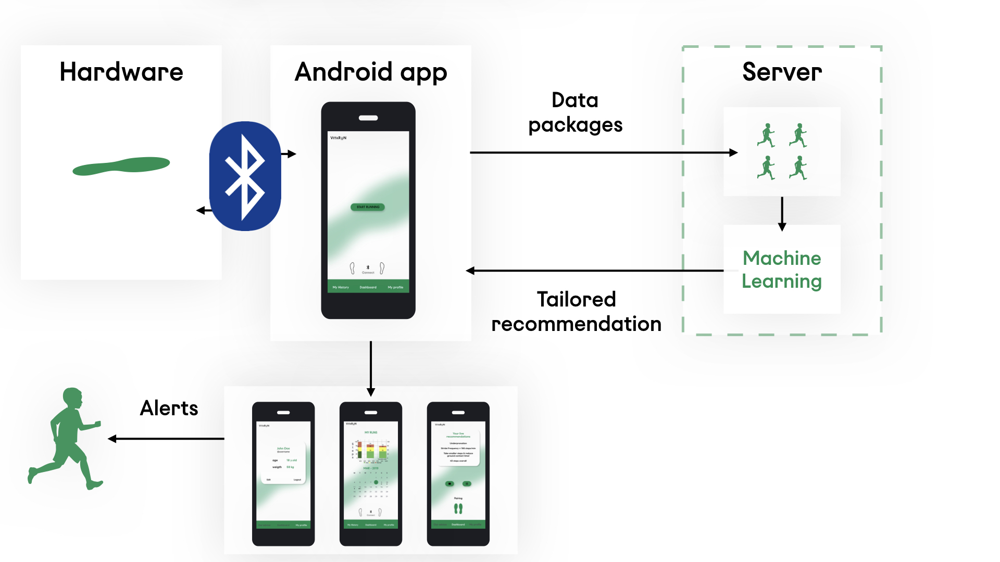
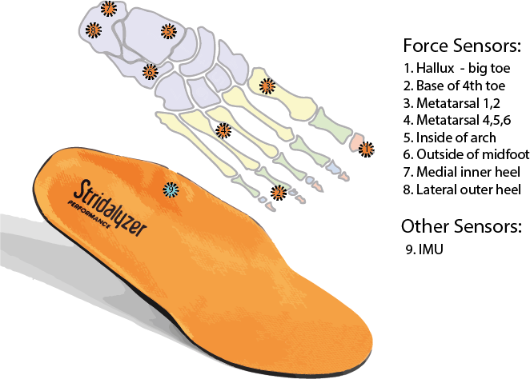

VitaRun
Machine learning and mobile healthcare
2019 - Group Project with Jonny Midgen, Alex Gourlay, Benjamin Pheipher, Wesley Norbert, Kenza Zouitene
and Luidmila Zudina


VitaRun monitors selected gait features of a runner through force sensors
and an IMU (Inertial Measurement Unit) embedded in an
insole, and provides live actionable feedback during the run.
It also provides insights derived from this data and keep a
history of runs, allowing the user to observe personal trends.
My personal contribution to the project was app development, backend communication and data visualisation.
Background
Running is the most popular sport activity in the UK. However, running injuries affect
1 in 4 amateurs.
Running gait and style is a factor that runners can control to reduce the risk of injury.
Based on research and interviews with a specialist kinesiologist, the following features were selected:

System
During a run, data from the insole sensors is communicated to the VitaRun app via Bluetooth low energy (BLE).
The app sends the data to the server where it is analysed. The results of the analysis and tailored reccomendations
are returned to the app where audio and visual feedback is returned live.
Historical data is also made available to monitor progress.

System Overview.
Hardware
The sensing element of the system was performed by a pair of ’Stridalyzer’ smart insoles, purchased from the manufacturer Retisense. Each insole contained 8 pressure sensors and a 6 axis IMU.

Insole sensors
The data from these sensors were streamed to the app using BLE.
App
App Architecture: The app was developed in Android
Studio and constructed in separate modules called
’fragments’ which each provided a core UI function.
This architecture
allowed team members to work individually on components
without editing the same scripts concurrently.
UI Design: The context of use, the intuitiveness and
ease of implementation were considered during the design
of the User Interface (UI). An initial mock up was made
to describe the app flow from a users perspective and to
predetermine the app architecture that was implemented in
Android Studio. The app wireframes were developed using
AdobeXd which allowed for dynamic prototyping.